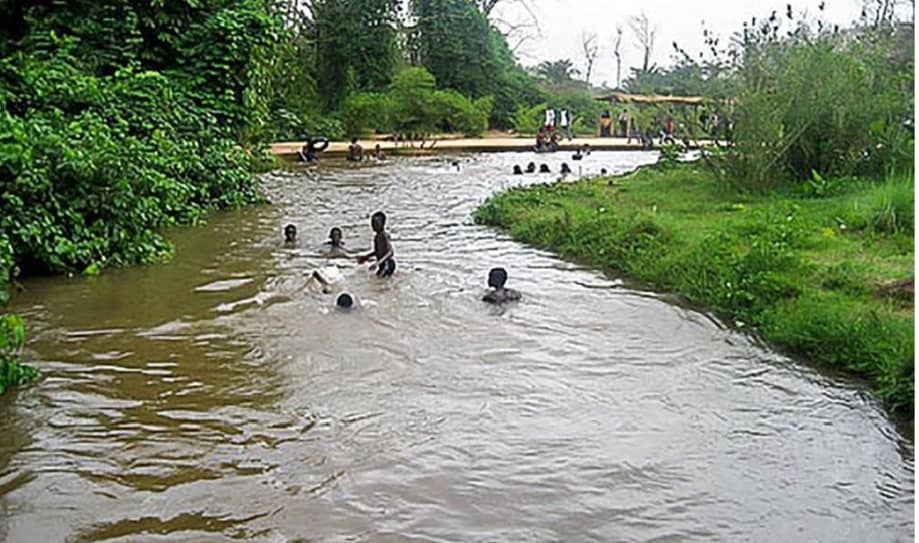

Description de La Guingette
Située à environ 20 kilomètres de Bobo, la Guinguette est un plan d'eau naturel formant une sorte de piscine sur le cours de la rivière de Kou. Connue des habitants et des visiteurs deBobo-Dioulasso, la Guinguette doit son nom au premier classement de la forêt du Kou en 1941 qui s'étend sur près de 115 hectares. Source naturelle entourée d'une végétationluxuriante, elle constitue un cadre idéal de détente, de pique-nique et de baignade. C'est une forêt très riche en végétation qui abrite plusieurs ressources naturelles.